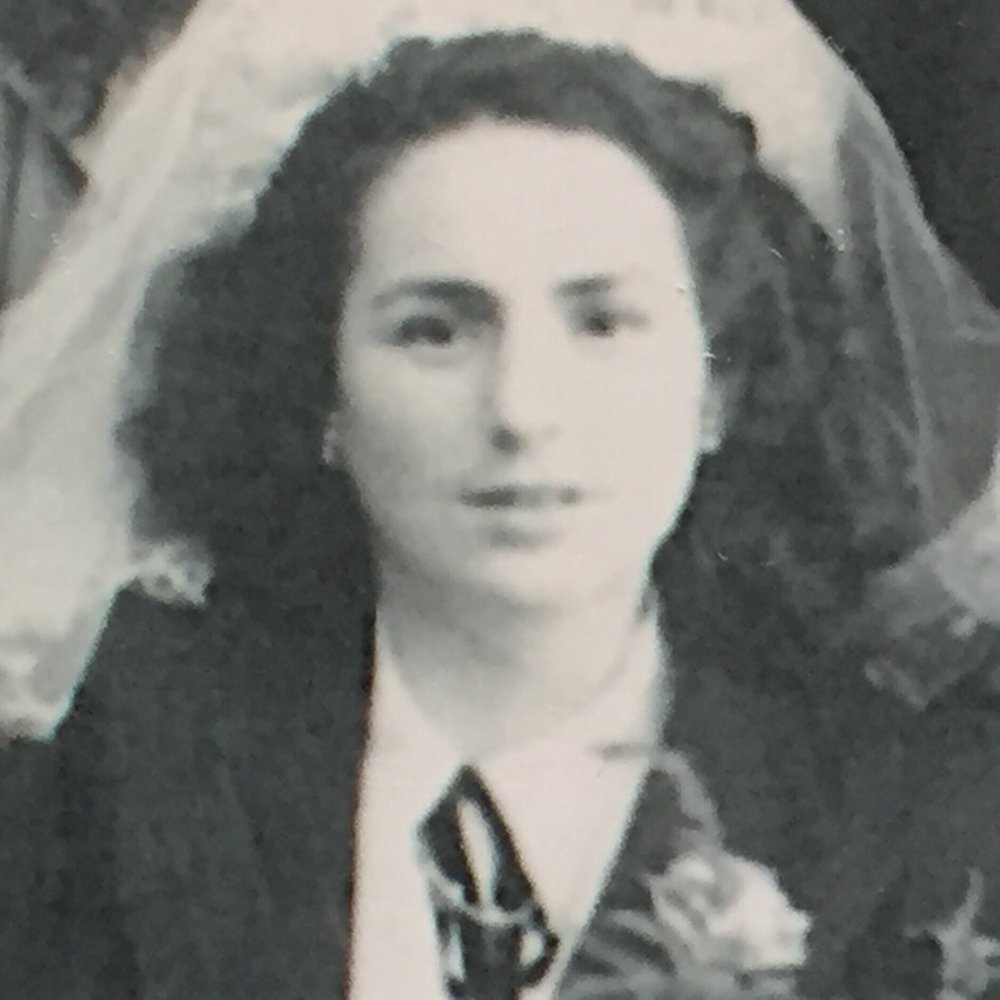

Portrait d’archive
Marcelle Abou (S)
Marcelle ABOU (S)
Marcelle ABOU est née le 20/10/1926 à Oran en Algérie.
Rassemblée à Lyon, elle est déportée à Auschwitz le 11/08/1944 par le convoi n°78.
Fille de Moïse (né à Tafilalet - Maroc en 1880) et de Saida-Simha BENHAMOU (née à Ain el Arba - Algérie en 1890). Arrêté le 21/07/1944 à Saint-Fons. Libérée le 09/05/1945 et rapatriée le 14/06/1945. Survivante
Dernière adresse connue : 12 (ou 5), rue Anatole France (Saint-Fons)
École fréquentée : Ecole Anatole France (aujourd'hui Ecole Simone Veil ) à Saint-Fons.
Nom : ABOU
Prénom(s) : Marcelle
Date naissance : 20/10/1926
Âge (ans) : 17
Lieu naissance : Oran
Pays ou département : Algérie
Lieu rassemblement : ?
Dernière adresse : 12 rue Anatole France
Ville : Saint Fons
Code postal : 69190
N° Convoi : 78
Date déportation : 11/08/1944
Informations diverses : Fille de Moïse (Tafilalet, Maroc, 1880) et de Saida née Benhamou (Ain ElArba, Algérie, 1890). Ils avaient 6 autres enfants :
Lucie Marie, épouse DERHY (née le 03/02/1918 à Oran; déportée à l’âge de 25 ans par le convoi n°59 du 02/09/1943 et morte à Auschwitz), Arrêtée le 11/07/1943 alors qu'elle sortait de la Gare des Brotteaux (cf. archives Montluc). Motif: franchissement clandestin de la frontière (?). Internée à la prison Montluc le 11/07/1943. Transférée à Drancy le 30 /07/1943; Dirhy née Abou (Lucie), le 3 février 1918 à Oran (Algérie), décédée le 7 septembre 1943 à Auschwitz (Pologne) et non entre le 2 septembre 1943 et le 1er juillet 1946 (JO); et
Prosper (1930), Marc (1933), Jacques, Joséphine, et David (Source: Monique, fille de Jacques ABOU).
École Anatole France à Saint-Fons; Arrêtée au printemps 1944 avec sa mère Saida-Simha née BENHAMOU (27/01/1890 à Aïn el Arbaa, Aïn Temouchent, Algérie). Elle sont déportées ensemble le 11 août 1944 par le convoi n° 78 de Lyon vers Auschwitz. Sa mère décéda en déportation. Marcelle est libérée le 09/05/1945 et rapatriée le 14/06/1945. Survivante. Épouse BENCHETRIT. Décédée le 24/01/1991.
Abou, née Benhamou (Saïda) le 27 janvier 1890 à Aïn-el-Arba (Algérie), décédée le 1er septembre 1944 à Auschwitz (Pologne) (JO).
Lieu de déportation : Auschwitz
Lieu de départ : Lyon
Nombre total de déporté·e·s du convoi : 430
Gazé·e·s à l'arrivée : 128 (29,8 %)
Survivant·e·s en 1945 : 36 (8,4 %)